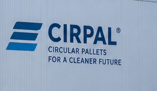
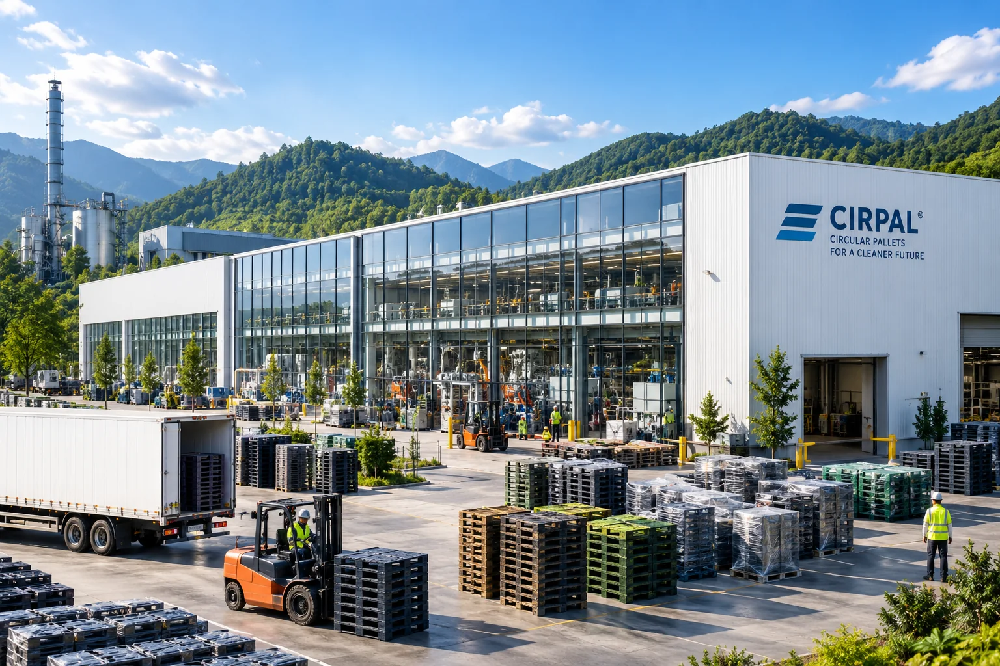
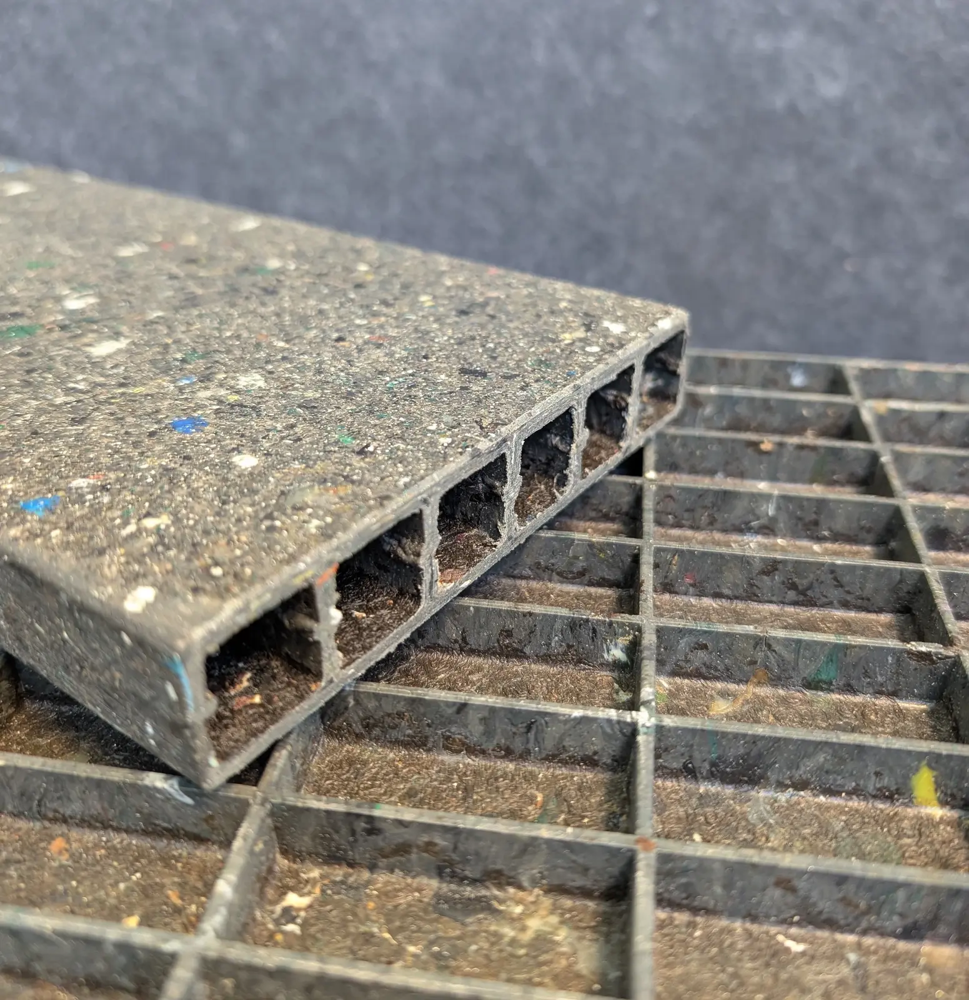
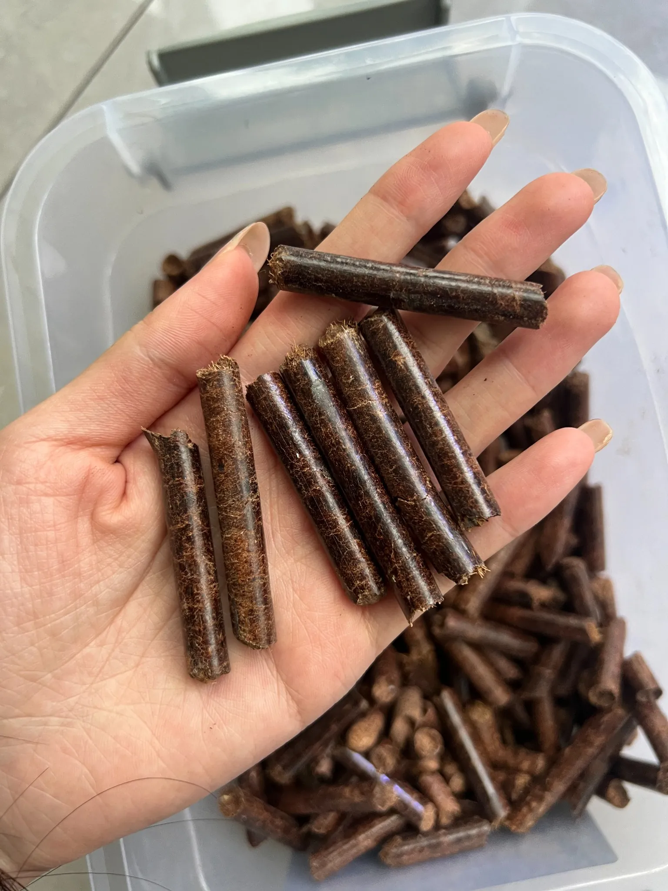
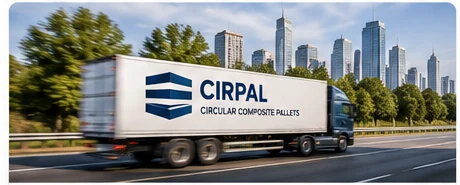

Difficult secondary streams
Mixed and lower-value material streams are screened and qualified for a defined product and process window.

MEON is the underlying industrial production platform for difficult and heterogeneous secondary materials. CIRPAL brings that technology into its first focused market application: circular composite pallets for Asian logistics.

Many secondary-material streams are technically recyclable but become commercially unattractive when sorting, washing and reprocessing cost more than the value recovered. MEON is being developed as an additional industrial route for qualified streams at that point—turning disposal cost into productive feedstock where the process and application economics can be validated.
Mixed and lower-value material streams are screened and qualified for a defined product and process window.
The machine–material–process architecture transforms qualified secondary materials directly into structural components.
The resulting components are designed for scalable applications, regional production and organised circular reprocessing.



MeSentia’s September 2026 non-confidential overview reports a TRL 6 baseline. The current programme centres on repeatability, automation, quality control and full-scale product validation.
TRL 9, serial deployment and validated unit economics are roadmap objectives—not current achievements.
Technology development, engineering and the first test/industrial system are based in Switzerland. Future machines and production systems are designed for scalable manufacturing through OEM partners in Asia and deployment close to material streams and customers. Thailand is established through a signed LOI, and Vietnam has provided a definitive commitment. Separately, Taiwan and Myanmar are the next planned TREON locations.
Pallets combine a large, repeatable application with established handling systems and clear return-loop potential. That makes them a demanding but practical first product for validating MEON at industrial scale. Final specifications, load classes and commercial performance remain subject to documented testing.
CIRPAL is being developed as a durable alternative for selected logistics applications where moisture resistance and repeated use matter.
Standardised pallet formats support repeated handling, traceable cycles and planned recovery within defined customer systems.
Dimensions, loads, equipment compatibility, return routes and total economics must be validated with pilot customers before scale-up.
TREON Ventures is establishing the Singapore-based Industrial Master Franchise and commercialisation platform; incorporation is in progress. CIRPAL is the first focused product application for controlled country rollout using approved MEON technology.
For Country Master Franchise development, production partnerships, material streams or commercial cooperation around CIRPAL, contact TREON.